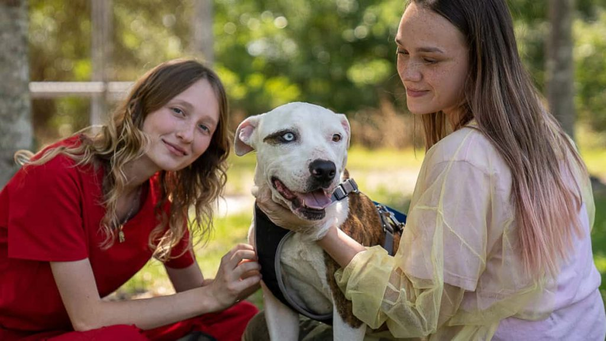

Lend a Paw: Volunteer With Us!
Our volunteers are the heart of Paws Pet Rescue! Your time and dedication make a huge difference in the lives of our animals. We have various opportunities available, whether you can commit a few hours a week or help out at special events.
Volunteer Opportunities
Animal Care
Help with feeding, cleaning kennels/cages, grooming, and providing enrichment for our dogs and cats. Direct interaction and care.
Dog Walking & Socialization
Give our dogs much-needed exercise and one-on-one attention. Help them practice leash manners and basic commands.
Cat Cuddling & Playtime
Spend quality time socializing our cats and kittens, helping them become more comfortable and adoptable.
Adoption Events
Assist with setting up, handling animals, and talking to potential adopters at off-site adoption events.
Administrative Support
Help with office tasks, data entry, answering phones, and organizing paperwork.
Foster Care
Provide a temporary loving home for animals needing special care, recovering from surgery, or too young for the shelter environment.
Ready to Join?
If you're passionate about animals and want to make a difference, we'd love to have you on our team! Contact our Volunteer Coordinator via email.